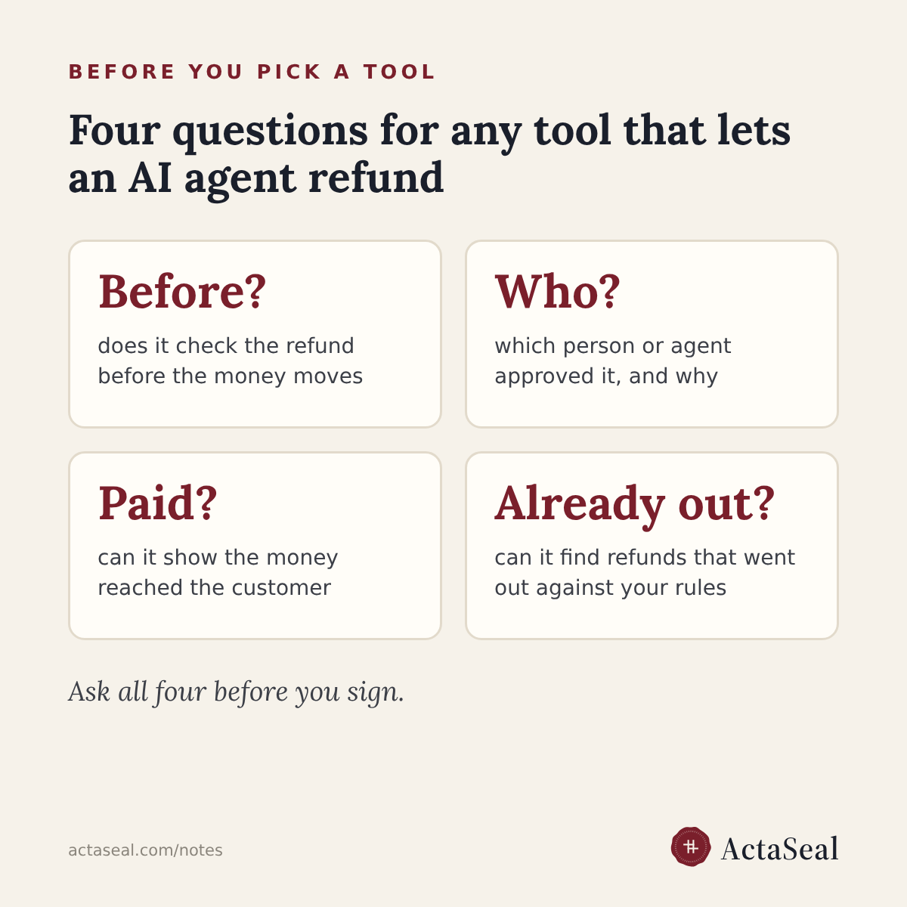

Tools that check or record refunds issued by AI agents (2026)
Short answer: AgentGuard, Screwtape.ai, MnemoPay and ActaSeal check a refund before an AI agent pays it; Fini is an AI support agent that applies refund rules itself. Each is described below from the vendor's own public pages, not from testing. ActaSeal is on the list and wrote it.

Which tools check a refund before an AI agent pays it?
AgentGuard, Screwtape.ai, MnemoPay and ActaSeal each check a refund or payment against rules before the money moves. Fini applies refund rules inside its own AI support agent.
AgentGuard
Checks a refund request against policy caps and a required capability, then signs an allow, escalate or block decision. Its receipt records the action, amount, policy, verdict and signer, and anyone with the public key can check it. Its own page notes that a signature does not prove the refund happened or that a person approved it.
Screwtape.ai
A separate check outside your agent that decides whether the agent may spend money. Each verdict gets a signed receipt that can be exported and checked. It advises keeping a person in charge, since verdicts can be wrong.
MnemoPay
Checks refund requests against your rules, such as amount caps, time windows and fraud flags, before the agent calls the refund endpoint, then writes a signed audit entry with the customer, order, the agent's reasoning and the time.
Fini
An AI support agent for chat, email and help centre. Its policy engine applies return windows and other refund rules, and each refund leaves a time-stamped record that can be searched and exported.
ActaSeal
Checks each refund or payment an agent attempts against the company's own rules before the money moves: it goes ahead, waits for a person, or is stopped. Every decision leaves a record that the customer, a seller, finance or an auditor can check for themselves, without the company's account and without trusting ActaSeal.
Which tools find refunds that already went out against our rules?
ActaSeal runs a refund audit on an export of past refunds and your written refund rules, with nothing connected to your systems. The other tools on this page describe checks on new refunds.
What should we ask before picking a tool?
Four questions: does it check the refund before the money moves; does it record which person or agent approved it and why; can it show the money reached the customer; and can it find refunds that already went out against your rules.
For Indian companies, the books must already keep an audit trail of every refund: see can you show your auditor every refund your AI agent issued? For an audit of past refunds, see the refund audit.
Vendors change their products. If a description here is out of date, write to sales@actaseal.com and it will be corrected.
Sources: AgentGuard, https://www.agentguard.run/gate-a-refund ; Screwtape.ai, https://dev.to/screwtape-ai/an-audit-trail-for-agent-payments-2kck ; MnemoPay, https://dev.to/t49qnsx7qtkpanks/ai-agents-that-refund-in-conversation-2dil ; Fini, https://www.usefini.com/guides/best-ai-platforms-refund-return-audit-trail-automation-2026